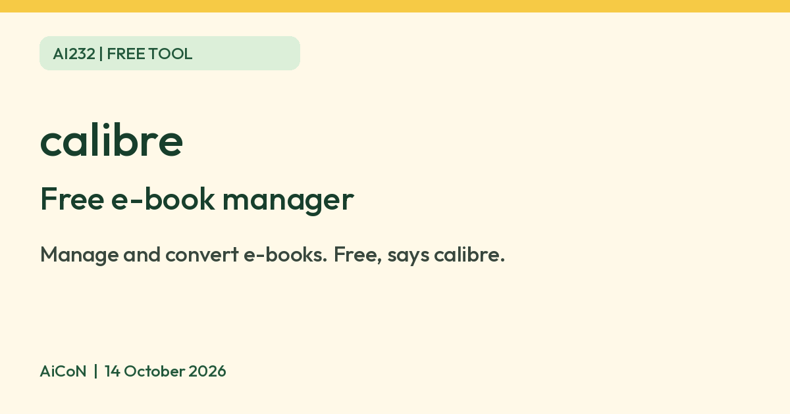
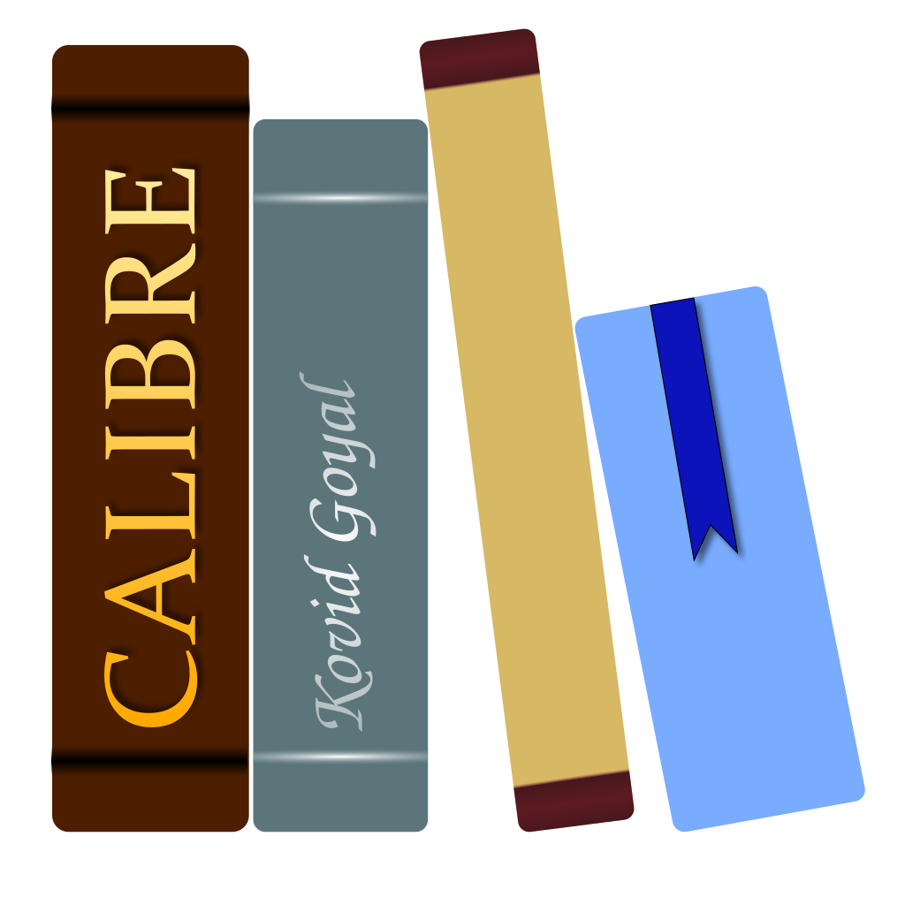

calibre: free e-book manager, converter and viewer
calibre says it is completely free and open source. It manages and converts e-books on your computer. Its software shows no ads, but its website does.

calibre logo

What it is
calibre is a program for managing e-books on your computer. Its About page says it can organise your e-book collection, convert dozens of file types, send books to e-readers, show books in a built-in viewer, and edit EPUB and Kindle files. It is not an AI tool. We included it because it is a free tool from an official source.
Is it free?
Yes. calibre's About page says it is "completely free and open source". Its site asks for optional contributions in dollars or rupees (INR). We found no paid tier on the pages we read.
Which computers
- Windows: the download page says calibre works on Windows 10 (version 1809) and higher. Older Windows needs an older calibre version, which the page links to.
- macOS: works on macOS 14 (Sonoma) and higher. Older Macs need an older version.
- Linux and a Portable version are listed on the download page. The About page says you can take calibre on a USB stick. We did not read those pages in detail.
- The download pages show version 9.16.0. We did not install or test it.
India
- The About page names primary developer Kovid Goyal as based in Mumbai, India. That is developer context, not a current India-availability check. We found no age limit on the pages read. The site's contribution box offers INR as a currency option. That is a payment option, not an India availability statement.
- AiCoN advice: download only from calibre-ebook.com. We did not check how calibre handles books with copy protection, so we make no claim about it.
Privacy and data
- calibre's privacy policy says "Both calibre and this website collect no information about users or visitors", except as described in the policy.
- It says the website shows third-party ads from Freestar and uses Google Analytics, and that the calibre software itself "displays no ads and uses no third party services for ads" and "uses no statistics service".
Frequently asked questions
Is calibre free?
Yes. Its About page says it is completely free and open source.
Does calibre show ads?
The software shows no ads, according to its privacy policy. The website does show ads.
Is it AI?
No. It is an e-book manager. We included it because it is a free tool from an official source.
How to start
- Open the official download page and choose your operating system. Check the current system requirements before downloading.
- Install calibre and add a copy of an e-book you have the right to use. Keep your original file backed up.
- Use the viewer to read it, or try conversion on a copy. Check the result before replacing an original or transferring it to a reader.
- Check device support and format limits on the official help pages. AiCoN did not test installation, conversion quality or copy-protected books.
What changed since this post?
About, Windows/macOS downloads and privacy pages rechecked on 14 October 2026. Downloads still list 9.16.0, Windows 10 version 1809+ and macOS 14+. Free/no-software-ads statements remain vendor claims. Website ads and Google Analytics are separate. Logo GPLv3 licence and credits added. Developer location does not verify India availability. Linux/portable pages, conversion quality and copy protection remain unchecked.
Sources: calibre About, Download for Windows, Download for macOS, Privacy policy, Logo licence record. Checked 14 October 2026.

Logo: calibre logo by Kovid Goyal, GPL v3, via Wikimedia Commons. Independent guide, not affiliated.